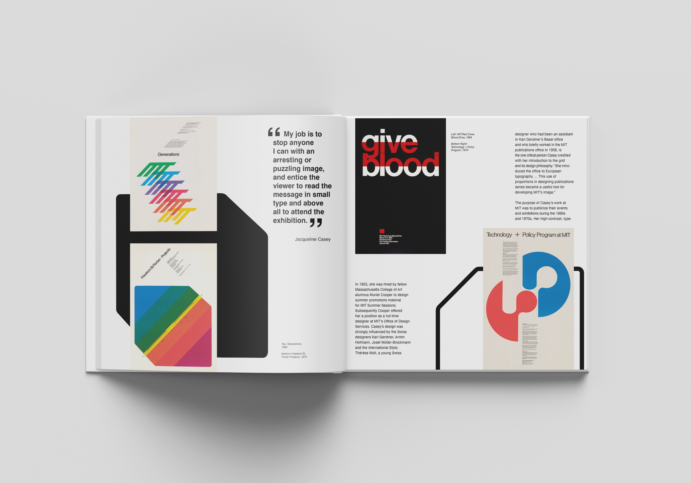
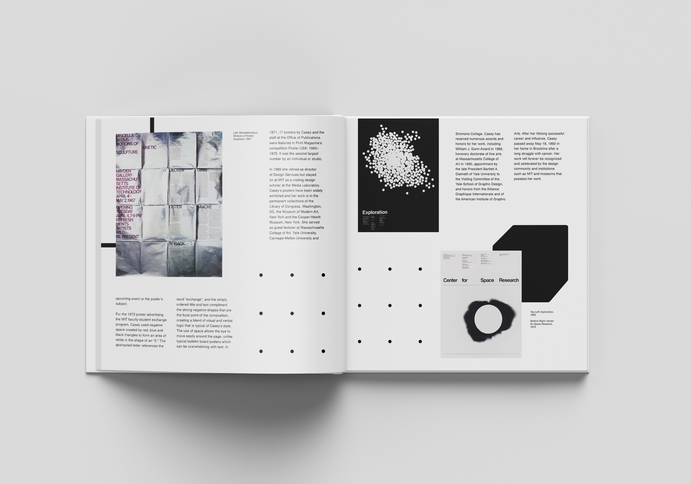
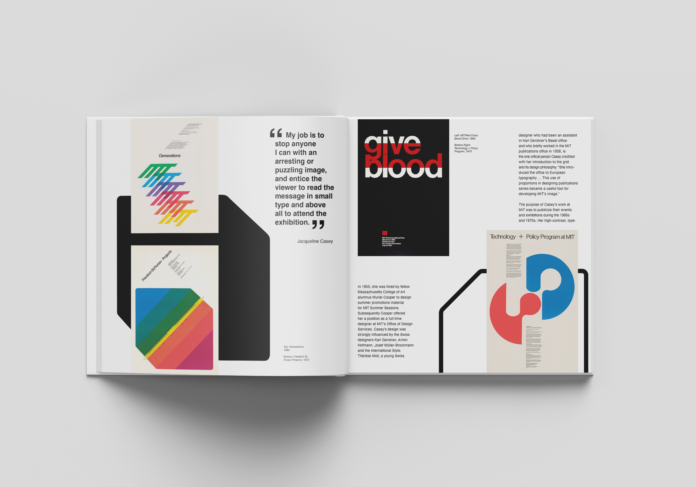
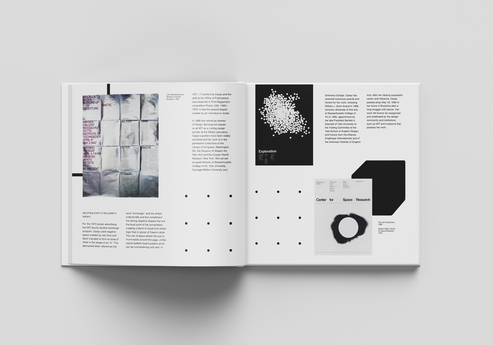
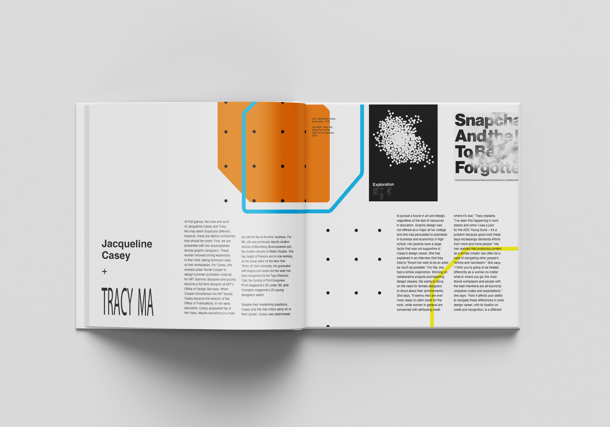
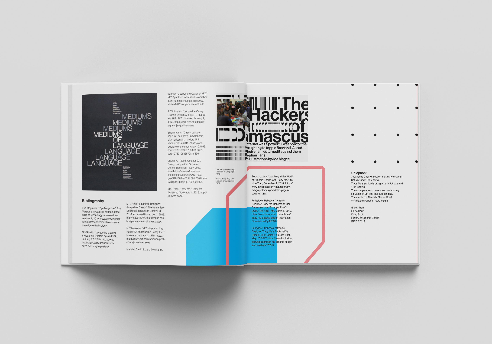
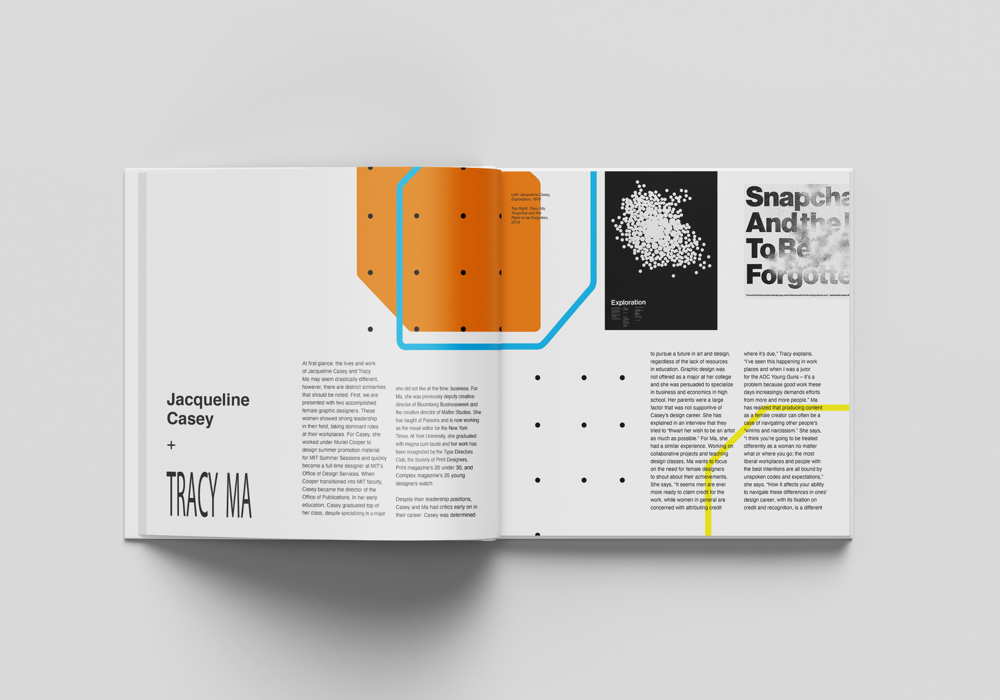
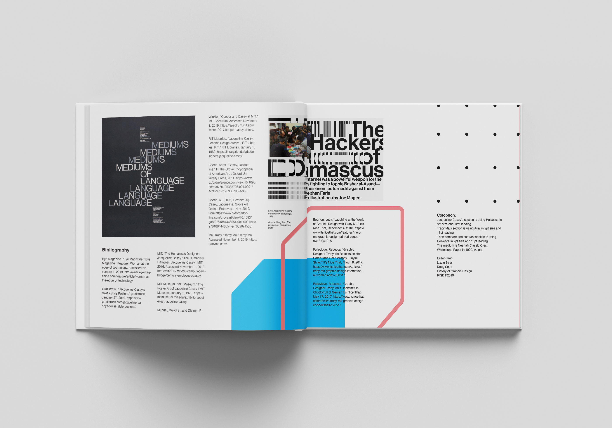

The 2 Designer Accordian is an accordion style book about 2 female graphic designers: Jacqueline Casey and Tracy Ma. The text compares and contrasts their lives and styles of their work. A visual system was created to connect the two different individuals. Printed at the Rhode Island School of Design on Neenah Classic Crest Whitestone Paper in 100C weight, 8"x8", 20 pages.
 




 


